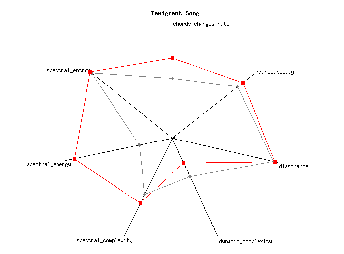
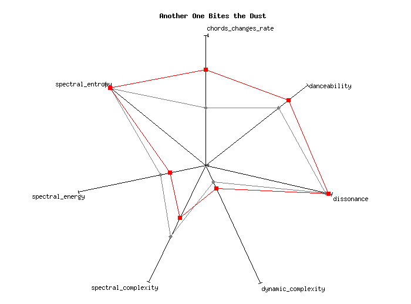

Led Zeppelin in Seven Dimensions
Previously, I figured out how to "fingerprint" songs with radar charts. But as soon as I did, I wanted to analyze the entire set of tunes by well known bands like Led Zeppelin.
As I suspected, this involved picking through MusicBrainz in a different way than was done for my music.
Code: analyze-recordings
Example chart that this produces:

The spokes are defined by specific measurements that I chose from those available in the the AcousticBrainz analysis of each tune. These were the most "meaningful" to me, but I don't know the exact meanings! Oof. Anyway, the red line connects measurements of the song in question (like the Immigrant Song). Gray represents the average of all songs. Also, the spokes are zero at the center and one at the end, with the measurements scaled to that range.
And here is the zip file of all the charts for every Zeppelin tune.
~
UPDATE: I visualized Queen with this list of recording ids for each of their albums. Here is one of the charts:

And here are all 146 of their charts.